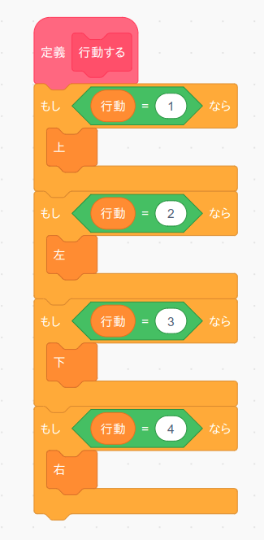

6. 行動する
1
行動する
車の次の行動を決めましたので、次は実際に車を動かしてみましょう。
次の「行動する」ブロックをブロック定義から作ってください。このブロックは繰り返し実行されますので「画面を再描画せずに実行する」は必ずチェックして下さい。
変数「行動」の値を見て車を上下左右に動かすだけの非常に簡単なプログラムになっています。
2
テストする
ではこのブロックのテストをしましょう。まず「緑の旗」を押した時に実行するテストプログラムを次の様に変更します。 プログラムを作りましたら。「緑の旗」ボタンを押してください。

ではプログラムの中身について説明します。 車のスタート地点の上方向(行動=1)のQ値を10、ひとつ上の座標の上方向(行動=1)のQ値を10、更にもうひとつ上の座標の右方向(行動=4)のQ値を10にセットしてから「次の行動を決める」と「行動する」を3回実行しますので、ルート画面が次の様になれば正常動作になります。
うまく動きましたら「Q値をセットする」のX座標、Y座標、行動の数値を色々変えるとどの様に車が動くのか試して下さい。